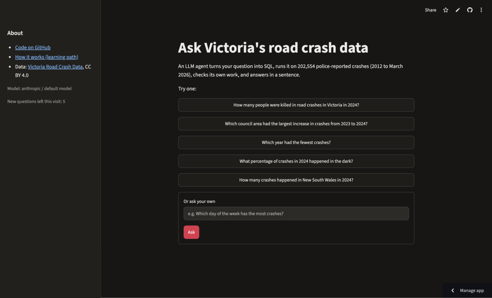
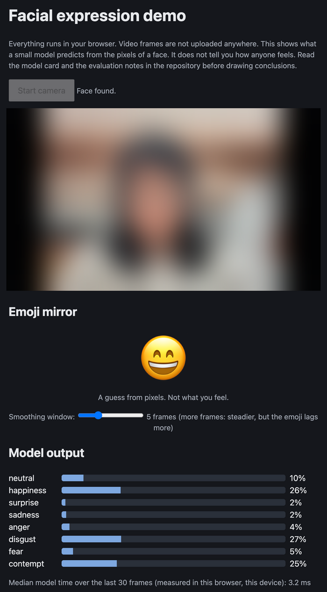
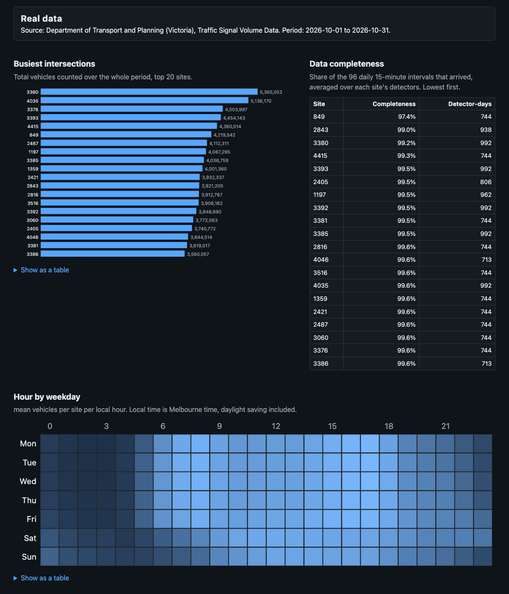
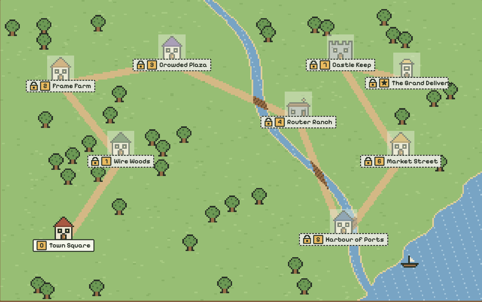
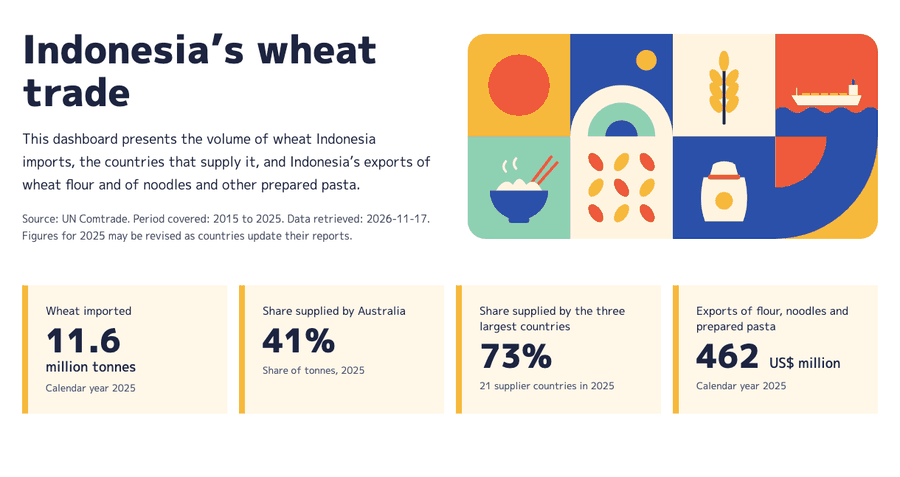
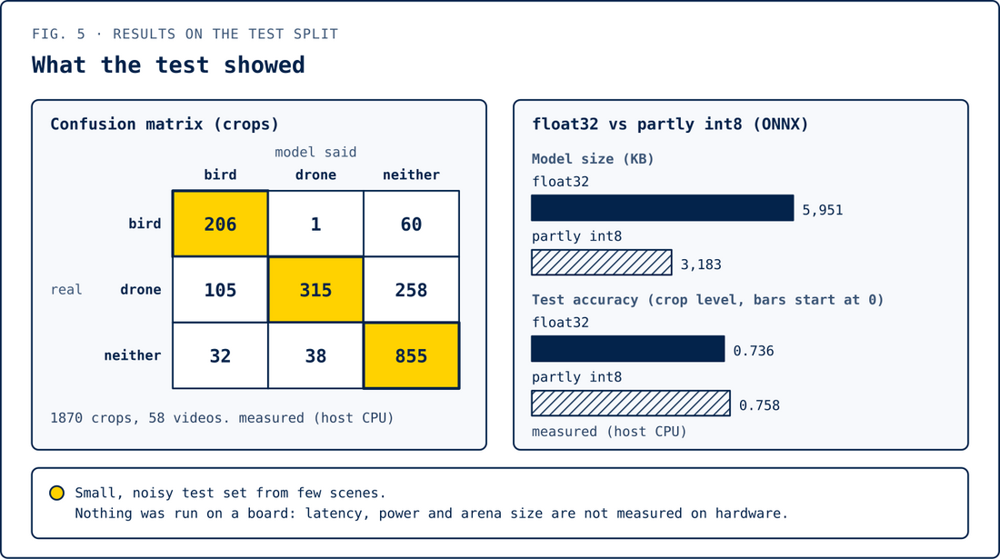

llm-project (crashsql) Answers plain-English questions about 202,554 Victorian road crashes. 82% correct on a 22-question gold set (measured).Skills
Machine learning and computer vision
PyTorch, TensorFlow, scikit-learn, ONNX
Computer vision, NLP, LLM agents, recommenders
CNNs, transfer learning, model evaluation
Software engineering
Python, C/C++, TypeScript, JavaScript, Java, C#
FastAPI, Node.js, React Native, .NET
Embedded (STM32, ESP32), Docker, Terraform
Azure, GitHub Actions, Git, Scrum
Data analysis and visualisation
SQL, PostgreSQL, SQL Server, dbt, pandas
Power BI, Tableau, Excel

facial-expression-lab Re-tested my thesis approach on JAFFE. Accuracy fell from 0.864 to 0.573 once the test set held out whole people (measured).
mini-city-brain Replayed 1,577,675 real traffic readings through an API, queue and warehouse. 15 of 15 data checks passed (measured, one laptop run).
cs-notes-and-games Free computer science study site and puzzle game: 104 levels, 68 chapters. Built with Claude Code, disclosed in the README.
asia-commodity-trade Australia's share of Indonesia's wheat imports fell from 57.6% to 40.6% between 2015 and 2025 (UN Comtrade).
edge-vision-lab Scene-split bird, drone and neither classifier. Plain int8 broke it; a partly int8 model recovered most of it (measured, laptop CPU, no board).Get in touch
Happy to talk about graduate and junior roles.